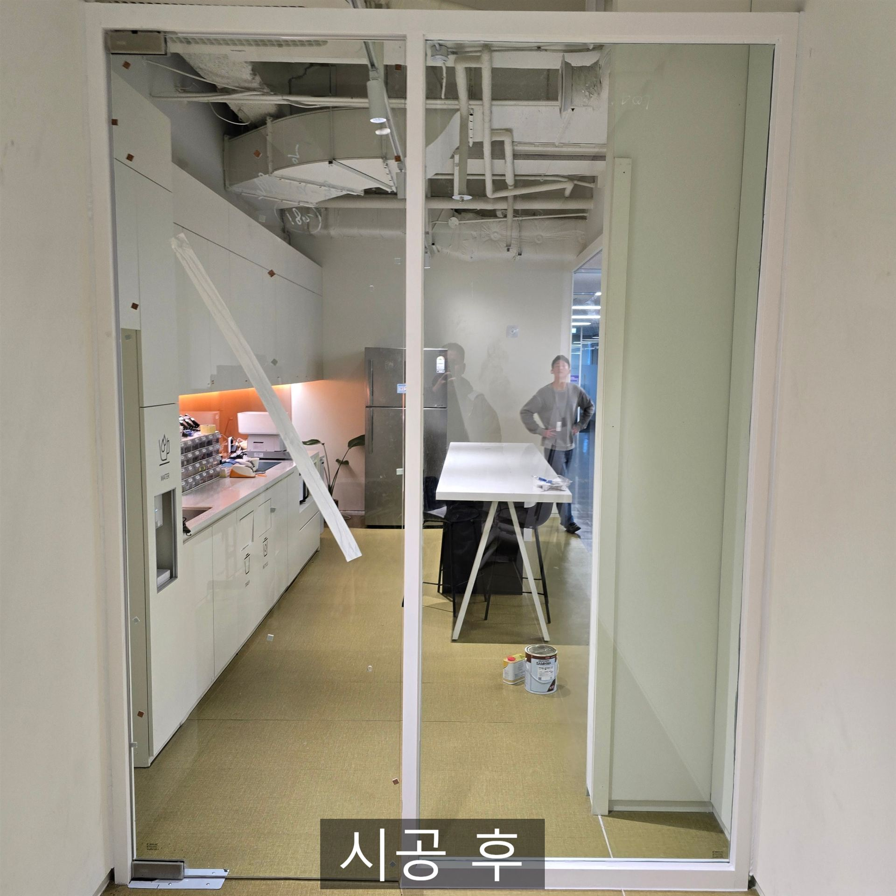

서울 · 경기 · 인천 · 현장 기록 8건
유리파티션 · 칸막이 설치
벽으로 막으면 공간이 답답해지고 개방감이 사라집니다. 유리파티션은 시야는 열어 두고 공간만 나눕니다.
시야는 열고 공간만 나눕니다
성수동 현장은 아래층 카페, 위층 사무실로 쓰는 복층 공간이었습니다. 10T 강화유리(1000×2100) 약 10장을 검은색 프레임에 한 장씩 세워 고정해 위층 사무실을 구분했습니다.
출입문도 함께 답니다
사무실로 드나들 수 있도록 강화도어를 함께 설치합니다. 비매립 강화도어는 바닥에 장치를 묻지 않는 방식이라 바닥을 따로 파내는 공사가 필요 없습니다.
이런 현장을 시공했습니다
- 사무실 회의실 강화유리 칸막이 (용산)
- 사무실 강화유리 12T 칸막이
- 금속 파티션 아쿠아 유리 (논현동, 방송 사무실)
- 폴딩도어 철거 후 강화유리 파티션 입구 (대치동 상가)
- 사무실 가벽 10T 강화유리 (노량진)
- 복층 사무실 유리파티션 (성수동)
견적은 실측 후 안내합니다
비용은 가로·세로 미터 수에 따라 달라집니다. 공간 크기와 유리 두께, 문 설치 여부를 확인한 뒤 정확히 안내해 드립니다.

복층 공간도 유리 파티션으로 나눌 수 있나요?
가능합니다. 성수동 현장도 아래층 카페와 위층 사무실을 10T 강화유리 파티션으로 구분했습니다. 유리라서 공간은 나뉘어도 답답하지 않은 것이 장점입니다.
관련 시공사례 보기 →
관련 시공사례 보기 →
유리 파티션에 출입문도 달 수 있나요?
네, 달 수 있습니다. 성수동 현장은 바닥을 파지 않는 비매립 강화도어를 함께 설치해 사무실로 드나들 수 있게 했습니다.
관련 시공사례 보기 →
관련 시공사례 보기 →
유리 파티션 설치 비용은 얼마인가요?
가로·세로 미터 수에 따라 달라져서 방문 실측이 꼭 필요합니다. 공간 크기와 유리 두께, 문 설치 여부를 확인한 뒤 정확히 안내해 드려요.
관련 시공사례 보기 →
관련 시공사례 보기 →